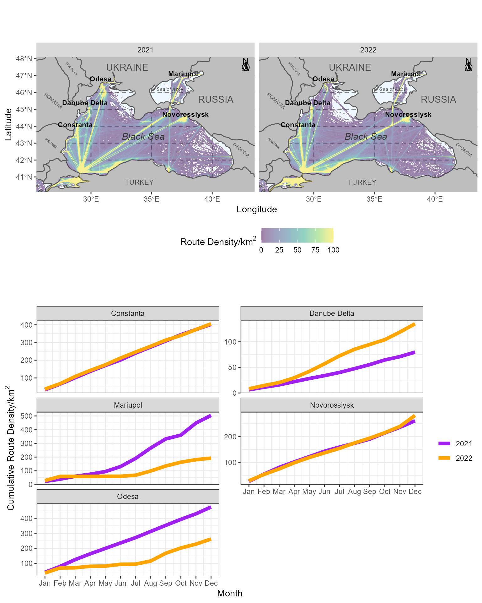

Ukraine Ship Analysis
Michael Wellington, Roger Lawes and Petra Kuhnert
25 January 2023
Ukraine_ship_analysis.RmdOverview
The following script accompanies the paper by Wellington et al. (2022) that explores the shipping data and in particular, cargo ship routes between 2021 and 2022 for ports around the Ukraine.
We first load the library and raster data object. This example demonstrates how to generate the map and plots. The raster data has been pre-processed as described in the manuscript. The original data can be downloaded from EMODNET.
library(UkraineCrops)
data(cargo_year_df)
data(Port_activity_ggdf)Data Curation
We curate a dataset and map constrained to the the major ports in and out of Ukraine.
sf::sf_use_s2(FALSE)## Spherical geometry (s2) switched off
world <- ne_countries(scale = "medium", returnclass = "sf")
class(world)## [1] "sf" "data.frame"
world_points<- st_centroid(world)
world_points <- cbind(world, st_coordinates(st_centroid(world$geometry)))
world_area <- world %>% dplyr::filter(name %in% c('Ukraine', 'Russia',
'Romania', 'Moldova',
'Bulgaria', 'Turkey', 'Georgia',
'Greece'))Map Generation
We now generate the plot the shipping routes through the Black Sea between 2021 and 2022 for January through to August.
facet_map <- ggplot() +
geom_sf(data = world_area, fill="grey", show.legend=FALSE) +
coord_sf(xlim = c(25.5, 43.5), ylim = c(40.1, 48.1), expand = FALSE) +
xlab('Longitude') + ylab('Latitude') +
theme(panel.grid.major =
element_line(color = gray(.5), linetype = 'dashed', size = 0.5),
panel.background = element_rect(fill = 'aliceblue')) +
new_scale_fill() +
geom_raster(data = cargo_year_df, aes(x=x, y=y, fill=value)) +
scale_fill_viridis_c(limits = c(0, 100), oob = scales::squish,
name=expression(paste("Route Density/", km^2)),
alpha=0.5) +
annotate(geom = "text", x = 40.3, y = 45.6, label = "RUSSIA",
color = "grey28", size = 4) +
annotate(geom = "text", x = 33, y = 47.5, label = "UKRAINE",
color = "grey28", size = 4) +
annotate(geom = "text", x = 34, y = 40.7, label = "TURKEY",
color = "grey28", size = 3) +
annotate(geom = "text", x = 28.4, y = 47.4, label = "MOLDOVA",
color = "grey28", size = 1.4, angle=-50) +
annotate(geom = "text", x = 42.4, y = 42.6, label = "GEORGIA",
color = "grey28", size = 1.8, angle=-40) +
annotate(geom = "text", x = 26.9, y = 45.5, label = "ROMANIA",
color = "grey28", size = 2.0, angle=-40) +
annotate(geom = "text", x = 26.7, y = 43.0, label = "BULGARIA",
color = "grey28", size = 1.2, angle=-40) +
annotate(geom = "text", x = 36.5, y = 46.2, label = "Sea of Azov",
fontface = "italic", color = "grey22", size = 2.1) +
annotate(geom = "text", x = 34.3, y = 43.4, label = "Black Sea",
fontface = "italic", color = "grey22", size = 4) +
annotate(geom = "text", x = 37.6, y = 47.1, label = "Mariupol",
fontface = "bold", color = "black", size = 3) +
annotate(geom = "text", x = 37.8, y = 44.7, label = "Novorossiysk",
fontface = "bold", color = "black", size = 3) +
annotate(geom = "text", x = 30.8, y = 46.8, label = "Odesa",
fontface = "bold", color = "black", size = 3) +
annotate(geom = "text", x = 29.5, y = 45.4, label = "Danube Delta",
fontface = "bold", color = "black", size = 3) +
annotate(geom = "text", x = 28.7, y = 44.1, label = "Constanta",
fontface = "bold", color = "black", size = 3) +
#annotation_scale(location = 'bl', width_hint = 0.5, height = unit(0.1, "cm")) +
annotation_north_arrow(location = 'tr', which_north = 'true',
pad_x = unit(0.05, 'in'), pad_y = unit(0.05, 'in'),
style = north_arrow_fancy_orienteering,
height= unit(0.5, "cm"),
width= unit(0.5, "cm")) +
facet_grid(~year) +
theme(legend.position="bottom")Plot Generation
We need to generate the second plot, which shows the cumulative shipping route density at different port centres. Again, we are using pre-processed data in this vignette. Details of pre-processing can be found in Wellington et al. (reference below).
Activity_month_plot <- ggplot(data=Port_activity_ggdf) + geom_line(aes(x=month, y=activity_cumsum, col=year_fac), size=2) +
facet_wrap(~port, scale="free_y", nrow=3) + theme_bw() + scale_x_continuous(breaks = 1:12,
labels = c('Jan', 'Feb', 'Mar', 'Apr', 'May', 'Jun', 'Jul', 'Aug', 'Sep', 'Oct', 'Nov', 'Dec')) +
labs(x="Month", y=expression(paste("Cumulative Route Density/", km^2))) + theme(legend.title=element_blank()) +
scale_color_manual(values = c("purple", "orange"))Formatting Final Plot
We can now assemble the plot combining a mapped comparison and cumulative route density.
Ship_plot <- ggdraw() +
draw_plot(Activity_month_plot, x=0,y=0, width=1, height=0.5) +
draw_plot(facet_map, x=0, y=0.5, width=1, height=0.5) +
theme(plot.background = element_rect(fill="white", color = NA))
Ship_plot
Calculate % change
Finally, we’ll calculate the percentage change in shipping activity, year on year to August.
## # A tibble: 2 × 9
## # Groups: port, year [2]
## port name Activity Date year month day activity_cumsum year_fac
## <chr> <chr> <dbl> <date> <dbl> <dbl> <int> <dbl> <fct>
## 1 Odesa Dec.2022 33.9 2022-12-01 2022 12 1 262. 2022
## 2 Odesa Dec.2021 45.4 2021-12-01 2021 12 1 475. 2021
(262.03-475.36)/475.36*100## [1] -44.87757## # A tibble: 2 × 9
## # Groups: port, year [2]
## port name Activity Date year month day activity_cum…¹ year_…²
## <chr> <chr> <dbl> <date> <dbl> <dbl> <int> <dbl> <fct>
## 1 Mariupol Dec.2022 11.2 2022-12-01 2022 12 1 192. 2022
## 2 Mariupol Dec.2021 56.0 2021-12-01 2021 12 1 504. 2021
## # … with abbreviated variable names ¹activity_cumsum, ²year_fac
(191.82-504.12)/504.12*100## [1] -61.94954Interesting that activity at Odesa and Mariupol decreased by 53% and 60%, respectively. This roughly equates to them being closed in 5 of 9 months (5/9*100 = 55.6%). Final calculation for the increase in activity at the Danube Delta below.
## # A tibble: 2 × 9
## # Groups: port, year [2]
## port name Activity Date year month day activity…¹ year_…²
## <chr> <chr> <dbl> <date> <dbl> <dbl> <int> <dbl> <fct>
## 1 Danube Delta Dec.2022 16.1 2022-12-01 2022 12 1 135. 2022
## 2 Danube Delta Dec.2021 8.72 2021-12-01 2021 12 1 79.7 2021
## # … with abbreviated variable names ¹activity_cumsum, ²year_fac
(135.05-79.67)/79.67*100## [1] 69.51174